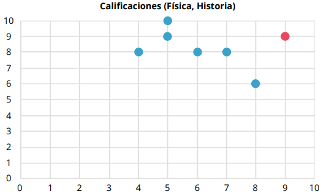

Ejemplo
En el siguiente diagrama de dispersión, se visualizan las variables de las calificaciones correspondientes a las materias de Física (eje x) e Historia (eje y) para un grupo de preparatoria de ocho estudiantes.
Calificaciones (Física, Historia)

De acuerdo al diagrama, la mayoría de los datos siguen una tendencia que disminuye de izquierda a derecha, por lo que las variables tienen una relación negativa. Esto quiere decir que, entre mayor calificación obtuvo la muestra en una de las materias, menor calificación obtuvo en la otra.
Sin embargo, hay un punto rojo aislado a la derecha, el cual indica que un estudiante obtuvo una buena calificación en ambas materias. De hecho, obtuvo la misma. Así, existe un estudiante que aparentemente no cumple el patrón de la muestra.